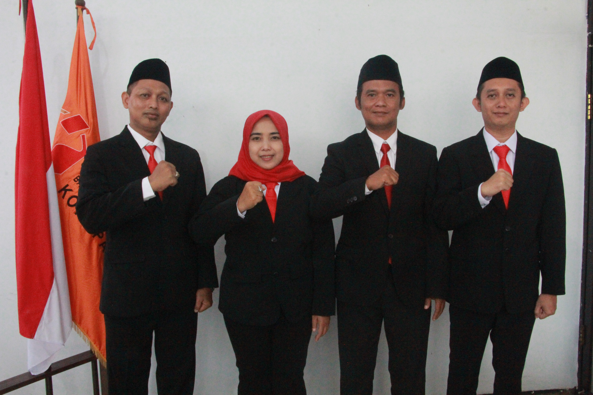

Kelola arsip regulasi dan verifikasi dokumen SIPERLU.
Mode demo — gunakan kredensial apa pun untuk melihat dashboard. Halaman ini tidak ditautkan dari dashboard publik.
Kelola seluruh arsip regulasi dalam satu dashboard terpusat.

Pilih kategori untuk memfilter katalog dokumen secara otomatis.
Menampilkan 16 dari 16 dokumen
| No | Nomor / Judul | Tahun | Tentang | File | Aksi |
|---|
Isi metadata arsip, lalu simpan untuk menerbitkannya ke katalog.
Belum ada file dipilih. Format PDF, maks 10 MB.
Tindakan ini tidak dapat dibatalkan.